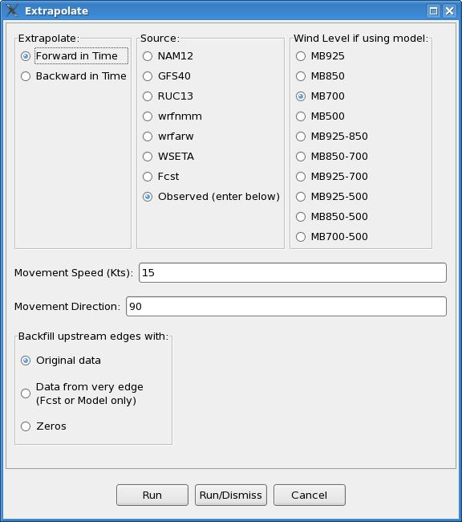
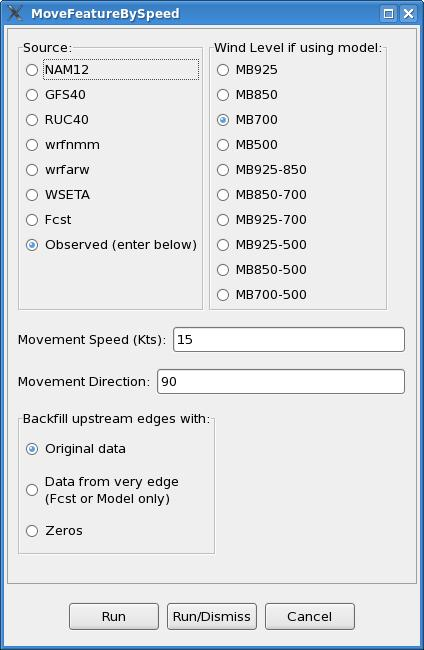

Extrapolate
Introduction
Extrapolate is a procedure
that allows one to linearly extrapolate features in time. In combination with tools for
populating Sky grids from satellite data and PoP grids from radar data, this can be useful
in extrapolating satellite and radar data. Of course, linear extrapolation is only good
up to a point, depending upon the weather situation. This may not be useful at all in a
lot of cases, as precipitation either forms, dissipates, expands, contacts and/or changes
speed and direction.
How
the Procedure Works
Extrapolate uses movement
information from a choice of models, the Fcst database, or user-entered sources to
linearly extrapolate features through time. Given a direction and speed of motion,
the tool will shift the data on the GFE domain as though moving at that speed in
that direction for one hour. A screenshot of the Extrapolate tool GUI is shown below.

The most important input in
the tool GUI is determining which source you wish to use to advect features. For instance,
if extrapolating satellite or radar data, one can use the distance-speed tool in D2D to arrive
at the direction and speed of motion, and then enter these values directly into the procedure
GUI. To use these values, one must use the default “Observed (enter below)” for “Source:”
Other movement sources available include model data and forecast surface wind information.
For the model sources, one can pick one of several levels or layers available under
“Wind Level if using model:” If a layer is chosen, then the models winds at all available
model levels within that layer, including both the top and bottom pressure levels indicated,
are averaged. The surface wind forecast information may not often be that useful, though one
could always create, say, a temporary Fcst wind grid for use as a steering current.
Note that, if using wind information from a model database or the Fcst database, the movement
values will vary across the grid. This portion of the tool was written to apply the wind
information from the chosen source at each point, so if the flow varies across the grid domain,
then this would be reflected in the output.
The NAM12 and the RUC13 have data only every three hours; the GFS40 only every six.
Originally, the code was written to let GFE interpolate model data between its valid times,
but this did not work in offices whose GFE default for missingDataMode was not set equal to
‘create,’ i.e., interpolate, and forcing ‘create’ in the smartTool call up command had no
effect for reasons unknown.
To get around this problem, the code was re-written to always look in a three (six) hour window
around the hour of interest, so model data is always there. It looks 1 (2) hour(s) back and
2 (4) hours forward, so that the hour half way between valid model times uses forward data,
which makes more sense when extrapolating data forward. The motion used may not be as ‘precise,’
but performance is not dependent upon variables outside the control of the Extrapolate procedure.
The GUI also provides forward and backward options, so one can also extrapolate backward in time.
This could be useful in blending a PoP forecast at a future hour with current radar data.
The Extrapolate procedure uses a smart tool called “MoveFeatureBySpeed”. The portion of this
tool that uses an observed speed and direction of movement entered by the forecaster was adapted
from Les Colins’ EditAreaAdjust tool, and allows one to shift the data in any scalar grid by the
speed and direction entered. Overall, the procedure and tool are set up to extrapolate an hour
at a time, using wind information from the hour before. Wind information for hours in between
model grids are derived via linear interpolation.
Used as a stand-alone tool, MoveFeatureBySpeed will shift the data as though moving at that
speed in that direction for one hour, but only on the selected grid itself rather than the
grid for the next hour. As such, the forward and backward options are not available from the
stand-alone tool. A screenshot of the “MoveFeatureBySpeed” tool GUI is shown below.
